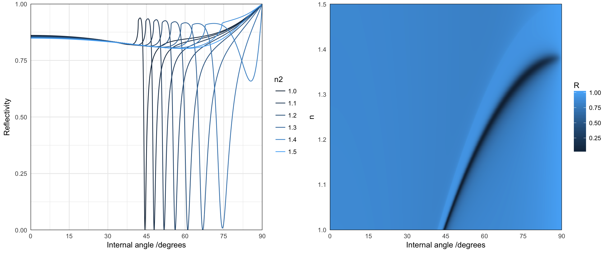
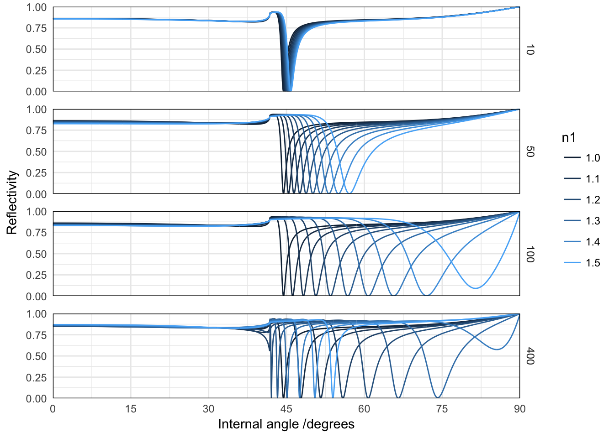

The Kretschmann configuration is commonly used for sensing applications: the sharp resonance associated with the excitation of SPPs at the metal/dielectric interface is strongly sensitive about the refractive index of the dielectric medium. Furthermore, because SPPs are associated with a exponential decay of the electric field in the surrounding medium, the technique provides a surface-sensitive, sub-wavelength, probe.
library(planar)
library(ggplot2)
require(reshape2)
library(gridExtra)
require(plyr)We define a function to model our system with the parameters of interest: a semi-infinite incident medium (glass), a 50nm gold film, a thin layer of varying thickness and refractive index, and a semi-infinite dielectric medium of varying refractive index.
wvl <- 632.8
gold <- epsAu(wvl)
simulation <- function(thickness = 0, n1 = n2, n2 = 1) {
results <- recursive_fresnelcpp(epsilon = list(1.5^2, gold$epsilon, n1^2,
n2^2), wavelength = gold$wavelength, thickness = c(0, 50, thickness,
0), angle = seq(0, pi/2, length = 2000), polarisation = "p")
data.frame(results[c("angle", "R")])
}## loop over parameters
parameters <- function(res = 10) data.frame(n2 = seq(1, 1.5, length = res))
d1 <- mdply(parameters(10), simulation)
d2 <- mdply(parameters(300), simulation)
p1 <- ggplot(d1) + geom_line(aes(angle * 180/pi, R, colour = n2, group = n2)) +
scale_y_continuous("Reflectivity", expand = c(0, 0), limits = c(0, 1)) +
scale_x_continuous("Internal angle /degrees", expand = c(0, 0), breaks = seq(0,
90, by = 15)) + guides(colour = guide_legend())
## colour map
p2 <- ggplot(d2) + geom_raster(aes(angle * 180/pi, n2, fill = R)) + scale_y_continuous("n",
expand = c(0, 0)) + scale_x_continuous("Internal angle /degrees", expand = c(0,
0), breaks = seq(0, 90, by = 15))
grid.arrange(p1, p2, nrow = 1)
We now look at the effect of changing the refractive index of a thin layer, of varying thickness.
## loop over parameters
parameters <- function(res = 10) expand.grid(thickness = c(10, 50, 100, 400),
n1 = seq(1, 1.5, length = res))
d1 <- mdply(parameters(10), simulation, n2 = 1)
ggplot(d1) + facet_grid(thickness ~ ., scales = "free") + geom_line(aes(angle *
180/pi, R, colour = n1, group = n1)) + scale_y_continuous("Reflectivity",
expand = c(0, 0), limits = c(0, 1)) + scale_x_continuous("Internal angle /degrees",
expand = c(0, 0), breaks = seq(0, 90, by = 15)) + guides(colour = guide_legend()) +
theme(panel.margin = unit(1, "lines")) For an optical thickness approaching \(\lambda / 2\), a new reflectivity dip appears, that is associated with the excitation of a guided mode. It is sharper than the standard SPP mode, because the modal field is mostly located in the dielectric layer.